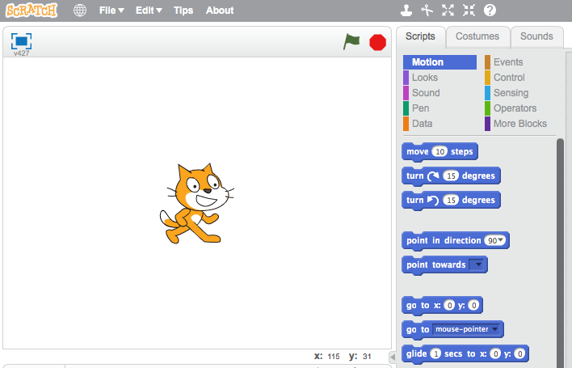
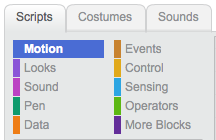

Introduce the project here. What will children be creating? What is the objective of the project?
You can also add an embedded version of the final project, so that children can see what they are working towards. Don’t worry, children won’t be able to see your code!
The steps should be broken down into a number of checkpoints. You can add text in bold or italics to add emphasis to key words or important points.
Each checkpoint should clearly explain what the child needs to do.
To aid clarity, you can also include images, like this:
screenshot
You should also regularly remind children to save their project:
Save your project
Step 2: Adding Scratch blocks
This step shows how to add Scratch code to your project.
Activity Checklist
You can add Scratch code to your project like this:
when flag clicked
point in direction (120 v)
set pen color to [#FF0000]
pen down
forever
move (1) steps
if on edge, bounce
end
You can test your Scratch code, and there is a guide to adding Scratch blocks to your project notes.
You can also colour-code your text, to match the colour of Scratch blocks.
screenshot
You can add:
Motion blocks, for example move (10) steps or if on edge, bounce;
Event blocks, for example when flag clicked or when I receive [message v];
Looks blocks, for example show or next costume
Control blocks, for example forever, or wait (1) secs;
Sound blocks, for example play sound meow or stop all sounds;
Sensing blocks, for example key space pressed or ask ... and wait;
Pen blocks, for example pen down or clear;
Operator blocks, for example pick random 1 to 10 or 10 * 2;
Data blocks for variables and lists, for example score or change score by 1;
More blocks, for example my function.
Test your project
You should regularly ask children to test their project, so that they can see the effects of the code they’re creating. You can even use these points as opportunities to fix bugs and improve code.
Save your project
Challenge: Challenge name
You should add at least 1 challenge, to allow children to apply what they’ve during the project. You can ask children to fix a problem or improve or adapt their project in some way.
Hi there!
Seems like this is your first time here. Would you like a tour?